Общая фильтрация библиотеки (BSH)
Добавляет кнопку BSH в стандартную панель фильтров библиотеки Steam. Позволяет отфильтровать все игры аккаунта по дополнительным параметрам, сохраняя привычное дерево коллекций в левом меню:
- Русский язык: озвучка, субтитры / интерфейс, без перевода.
- Ранний доступ: только в раннем доступе, бывшие игры раннего доступа / переиздания или скрытие раннего доступа.
- Отзывы и рейтинг: точные диапазоны по количеству обзоров и проценту положительных отзывов.
- Год выхода: выбор одного или нескольких лет со встроенным поиском (приоритет отдаётся оригинальной дате релиза
original_release_date). - Шаблоны: сохранение наборов фильтров для быстрого переключения в один щелчок.
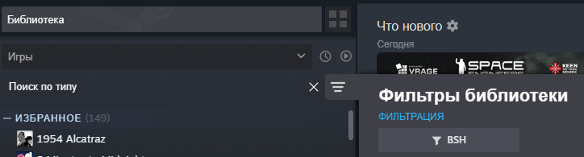
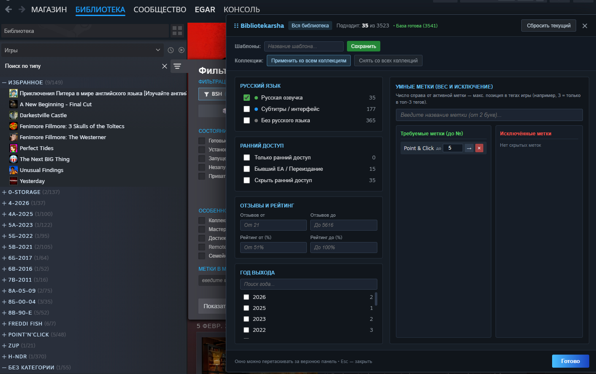
Фильтрация внутри коллекций и двойные счётчики в сайдбаре
Добавляет кнопку BSH в верхнюю панель каждой коллекции рядом со списком сортировки. При активном фильтре кнопка показывает счётчик вида подходит/всего и кнопку быстрого сброса ×.
- Независимые фильтры: для каждой коллекции можно настроить свой отдельный фильтр по языку, раннему доступу, году выхода, обзорам, рейтингу и умным меткам.
- Массовое применение: кнопки «Применить ко всем коллекциям» и «Снять со всех коллекций» без затрагивания общего списка игр.
- Подписи под обложками: при активном фильтре под каждой карточкой игры в коллекции выводится уровень русской локализации (например, «Русская озвучка» или «Субтитры + интерфейс»).
- Двойные счётчики в левом меню: рядом с каждой отфильтрованной коллекцией появляется цветной бейдж
подходит/всего(голубой — если игры есть, красный0/...— если совпадений нет).
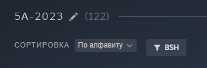
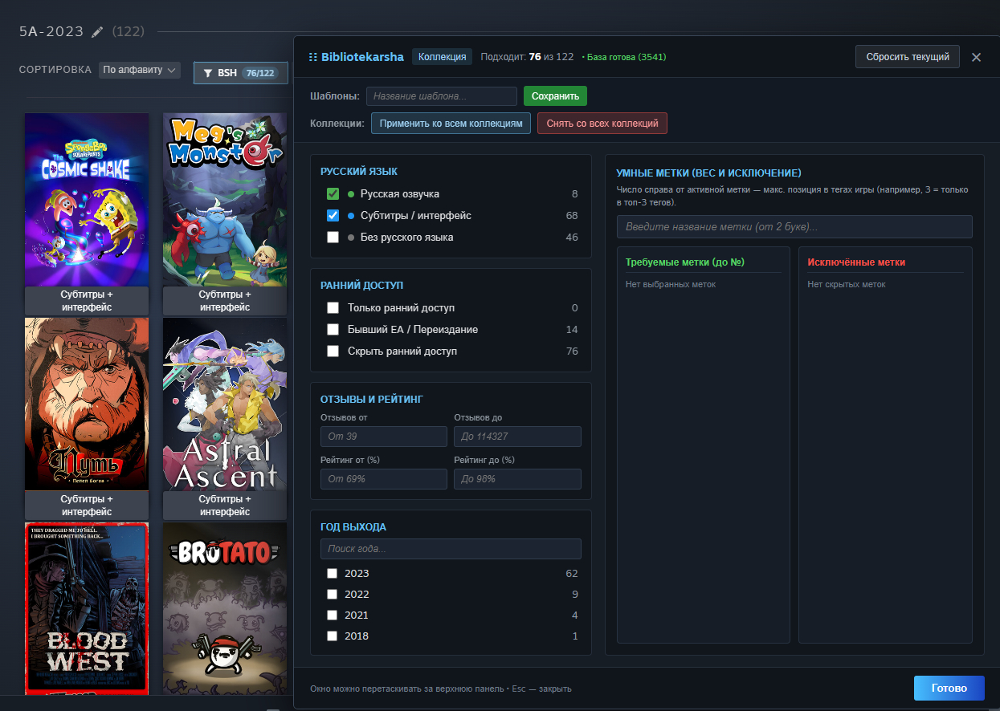
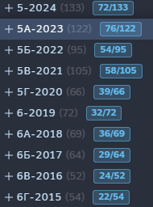
Рулетка библиотеки (🎲)
Добавляет кнопку 🎲 Рулетка под кнопкой BSH в панели общих фильтров библиотеки. Помогает выбрать случайную игру с учётом всех активных фильтров Steam и Bibliotekarsha.
- Список коллекций слева: «Избранное», ваши коллекции и игры «Без категории» со счётчиком подходящих игр, поиском, кнопками «Выбрать все» / «Убрать все» и выделением протяжкой (зажмите ЛКМ и проведите по списку).
- Запуск рулетки: опция «Приоритет по отзывам» повышает шанс выпадения игр с высоким рейтингом и большим числом отзывов.
- Просмотр подборки: переключение в сетку всех отобранных игр с поиском и сортировкой по имени, году выхода, умному рейтингу и наигранному времени.
- Карточка игры: постер, рейтинг, наигранное время, русский язык, дата выхода, разработчик, издатель, теги и описание, а также кнопки «Перейти в библиотеке», «▶ Запустить» и «Магазин ↗».
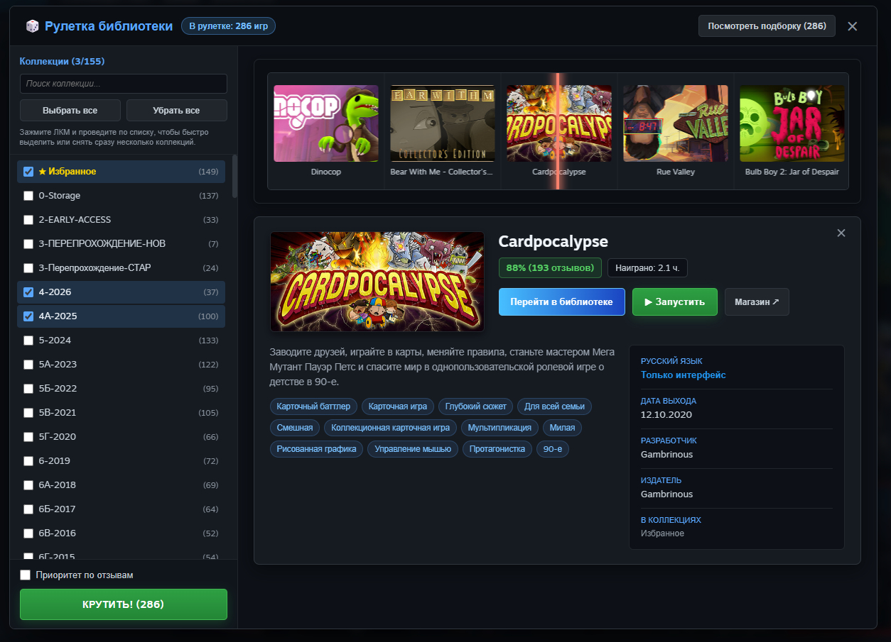
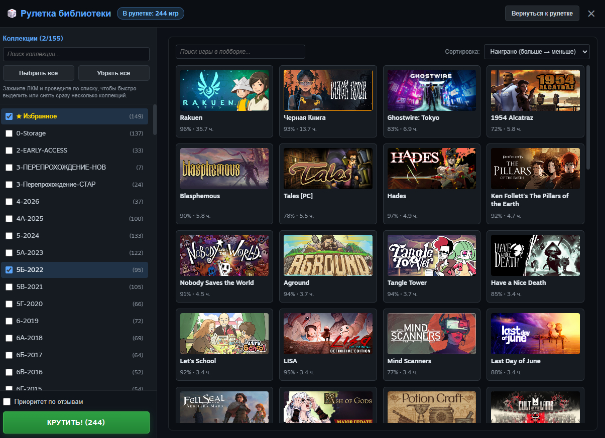
Страница игры в библиотеке: «Сведения об игре» и сводка NFO (i)
- Секция «Сведения об игре» в правой колонке: выводит уровень русского перевода с цветным индикатором и точный статус раннего доступа (сколько времени игра в EA или сколько провела в EA до релиза).
- Кнопка сводки NFO (
i) рядом с «Играть»: открывает окно сводки с карточками и кнопкой «✎ Заметки» в шапке (синхронизировано с заметками в магазине):- HowLongToBeat: время прохождения (сюжет, сюжет + доп., 100%, все стили) с выбором совпадений.
- Zone of Games: автоматический поиск игры на ZoneOfGames.ru и прямые ссылки на русификаторы с указанием размера.
- Время друзей и Глобальные достижения: лидеры по часам среди друзей (с открытием профиля), среднее/минимальное время и статистика достижений Steam.
- Расширенные обзоры Steam: Тотальные (включая ключи, с Глобальным монитором по 29 языкам и круговой диаграммой), Безкитайские и Русские (с чтением русскоязычных отзывов).
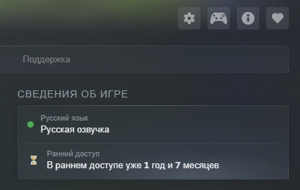
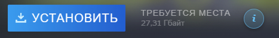
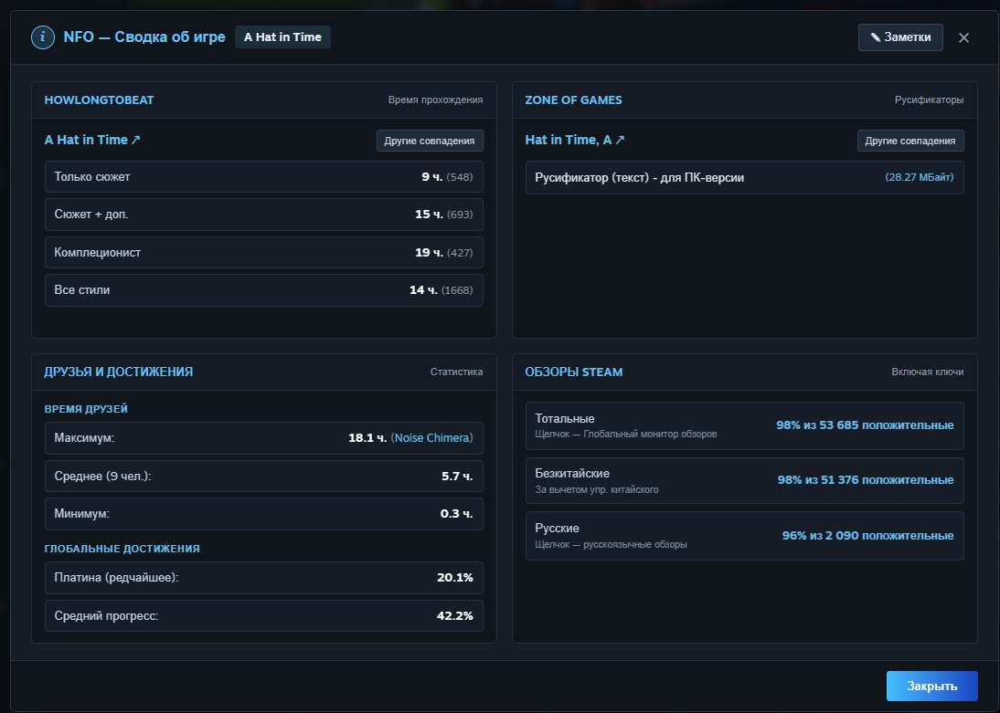
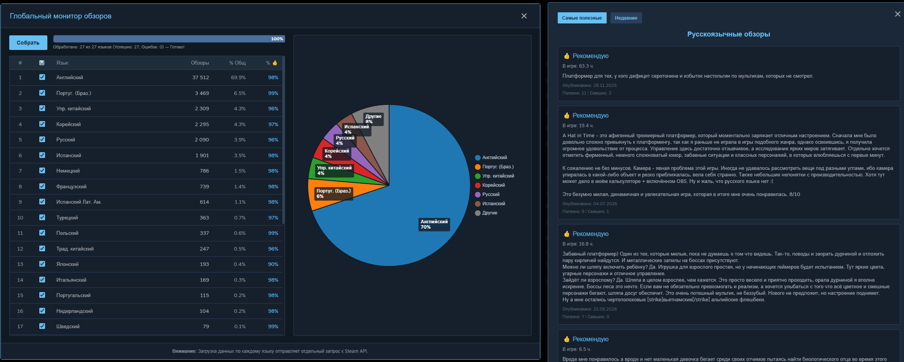
Наблюдатель и Календарь релизов
Добавляет кнопку Наблюдатель в верхнюю панель клиента Steam со статусами актуальности базы для Желаемого (Ж), Библиотеки (Б) и счётчиком непрочитанных событий. Данные хранятся раздельно для каждого аккаунта Steam.
- Список желаемого: отслеживает изменения даты выхода, выход из раннего доступа, добавление/изменение/удаление русского языка, появление или скрытие демо и плейтестов, а также снятие игры с продажи и возврат в магазин.
- Библиотека: отслеживает выход из раннего доступа, изменения русской локализации и снятие/возврат игр (с настройкой пропуска игр, у которых уже есть русский язык).
- Календарь релизов: отдельное окно с календарём по месяцам для игр из вашего желаемого, фильтрами по годам и экспортом в файл
.ics.
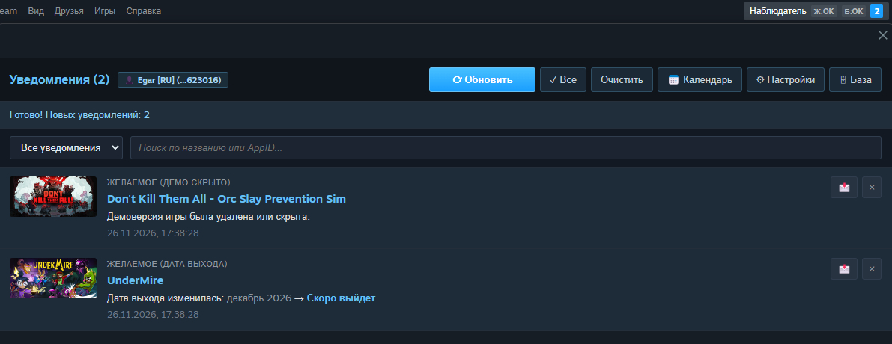
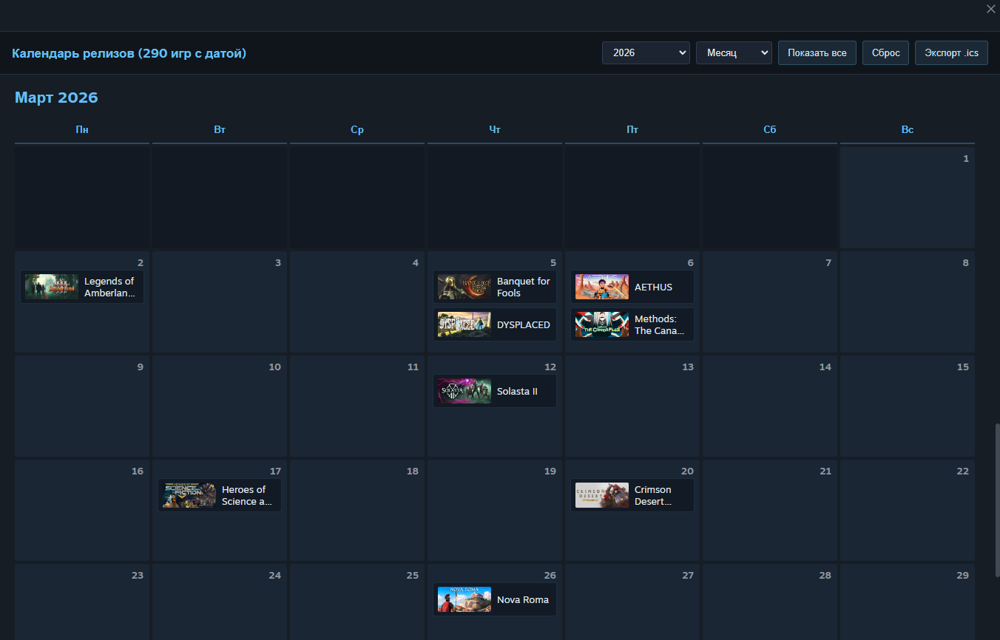